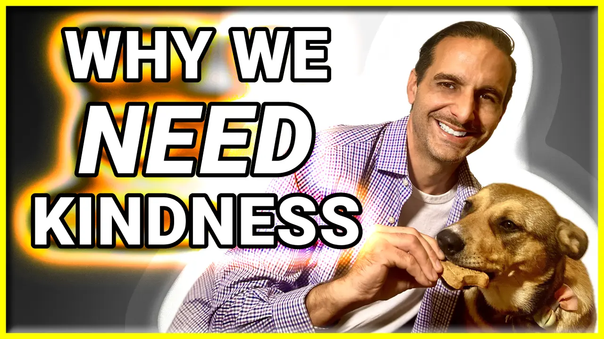
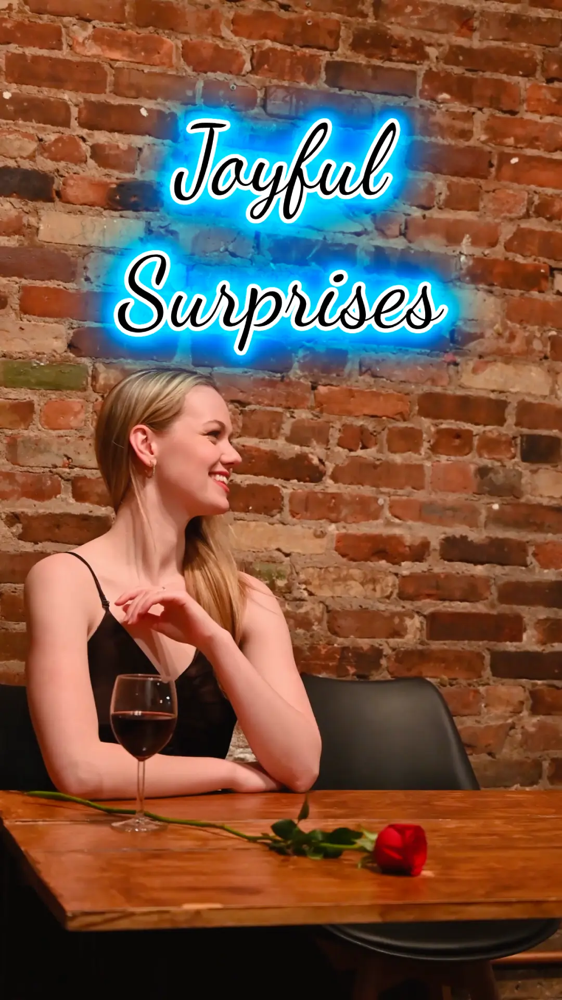
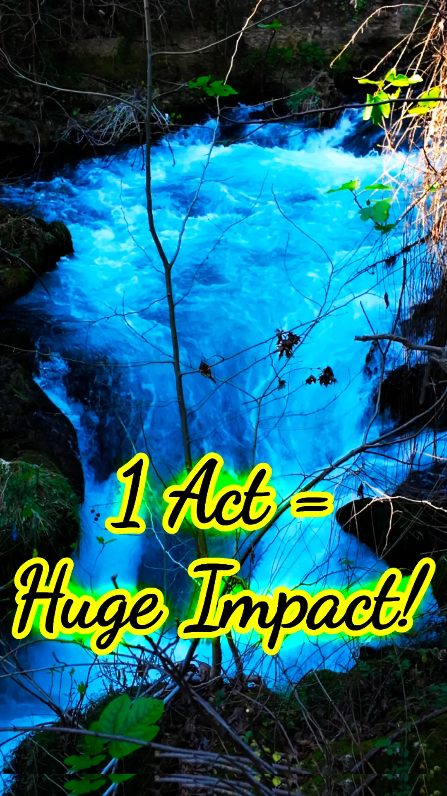

The Ripple Effect of Kindness
What if one small act of kindness—something you do without thinking—could completely change someone’s day or even their life?
In our episode on Everyday Kindness, we dive deep into how spontaneous kindness creates waves of positivity—and why science proves it's good for you.
Real Stories of Kindness in Action
Sometimes, the smallest gestures have the biggest impact. Here are a few real-world examples of kindness that sparked lasting change:
- A man in New York paid for a struggling mother's groceries. She later started a community food program helping hundreds of families.
- A student’s act of paying for a classmate’s lunch launched a school-wide "Pay It Forward" movement, reducing bullying incidents by 30%.
- A heartfelt letter to a homeless individual led him to seek help, get a job, and rebuild his life—proving that words alone can inspire change.
The Science Behind Kindness
Research shows that kindness is more than just a virtue—it has measurable effects on our health and happiness.
- Dr. Sonja Lyubomirsky, in The How of Happiness, found that performing five acts of kindness a week significantly increases overall happiness.
- Psychologist Jonathan Haidt explains in The Happiness Hypothesis how witnessing kindness triggers "moral elevation," inspiring more generosity in others.
- Evolutionary research in The Moral Animal shows that kindness is hardwired into human survival, fostering trust and cooperation.
On a biological level, kindness releases oxytocin (the "love hormone"), lowers cortisol (stress hormone), and increases serotonin—leading to a healthier, happier life.
How to Make Kindness a Daily Habit
Spontaneous kindness isn’t about grand gestures—it’s about simple, everyday actions.
- Be Present: Notice small opportunities to help—whether it’s holding the door or offering a genuine compliment.
- Keep It Simple: Text a friend, leave an uplifting note, or pay for someone’s coffee. Little things count.
- Make It a Habit: Commit to one small act of kindness daily, and watch how it transforms your mindset.
- Expect Nothing in Return: The true power of kindness lies in giving freely, without expectation.
- Reflect on Your Impact: Take a moment at the end of the day to acknowledge how your kindness made a difference.
Why This Matters
In a world that can often feel disconnected, kindness is a force that unites us. It fosters trust, strengthens communities, and reminds us of our shared humanity.
Imagine if every person committed to one spontaneous act of kindness each day. The ripple effect would be unstoppable.
On This Topic
📚 Kindness impacts us and the world around us in profound ways.
Check out the Related Resources below for books and more content on everyday kindness, with motivational stories and the neuroscience on how and why it works.
Article for career/professional focus:
Kindness at Work: The Secret to Stronger Networks, Promotions, and Job Offers
Related Resources
- Episode
-  Unlock the Power of Everyday Kindness: Transform Lives Today! 4/25 Kindness has the power to transform lives, and it starts with simple, everyday acts. Explore the ripple effect of compassion and how small gestures can make a big impact.
- Episode Podcasts
- Apple Spotify YouTube
- Shorts
-  Unexpected Kindness Sparks Joy ✨ Discover the power of unexpected kindness and how it transforms both the giver and receiver while boosting happiness and well-being.
-  This ☝️ Act of Kindness Changes Everything! A single act of kindness can spark a chain reaction that transforms lives!
- Books on Kindness
-
📘 The How of Happiness: A Scientific Approach to Getting the Life You Want by Sonja Lyubomirsky
Backed by scientific research, this guide reveals practical strategies for increasing happiness through intentional activities, mindset shifts, and sustainable habits.
❧ Other editions: 📖 Paperback, 📱 Kindle, 🎧 Audiobook | 🗺️ Intl: French, German, Polish, Spanish (En Español) -
📗 The Happiness Hypothesis: Finding Modern Truth in Ancient Wisdom by Jonathan Haidt
Blending psychology with ancient philosophy, this exploration of happiness uncovers timeless insights on well-being, resilience, and the balance between reason and emotion.
❧ Other editions: 📖 Paperback, 📱 Kindle, 🎧 Audiobook | 🗺️ Intl: Chinese (Simplified), French, German, Italian, Japanese, Portuguese, Spanish (En Español), Turkish -
📕 The Moral Animal: Why We Are The Way We Are: The New Science of Evolutionary Psychology by Robert Wright
Examining human behavior through the lens of evolutionary psychology, this work explores how natural selection has shaped morality, relationships, and social instincts.
❧ Other editions: 📖 Paperback, 📱 Kindle, 🎧 Audiobook